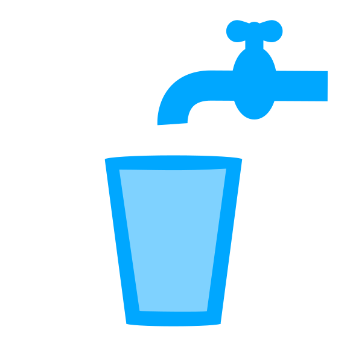

<!doctype html>
<html lang="en">
    <head>
        <meta charset="utf-8">
        <meta http-equiv="X-UA-Compatible" content="IE=edge">
        <meta name="viewport" content="initial-scale=1,user-scalable=no,maximum-scale=1,width=device-width">
        <meta name="mobile-web-app-capable" content="yes">
        <meta name="apple-mobile-web-app-capable" content="yes">
        <link rel="stylesheet" href="css/leaflet.css">
        <link rel="stylesheet" href="css/L.Control.Layers.Tree.css">
        <link rel="stylesheet" href="css/L.Control.Locate.min.css">
        <link rel="stylesheet" href="css/qgis2web.css">
        <link rel="stylesheet" href="css/fontawesome-all.min.css">
        <link rel="stylesheet" href="css/leaflet.photon.css">
        <link rel="stylesheet" href="css/leaflet-measure.css">
        <style>
        #map {
            width: 2057px;
            height: 809px;
        }
        </style>
        <title></title>
    </head>
    <body>
        <div id="map">
        </div>
        <script src="js/qgis2web_expressions.js"></script>
        <script src="js/leaflet.js"></script>
        <script src="js/L.Control.Layers.Tree.min.js"></script>
        <script src="js/L.Control.Locate.min.js"></script>
        <script src="js/leaflet.rotatedMarker.js"></script>
        <script src="js/leaflet.pattern.js"></script>
        <script src="js/leaflet-hash.js"></script>
        <script src="js/Autolinker.min.js"></script>
        <script src="js/rbush.min.js"></script>
        <script src="js/labelgun.min.js"></script>
        <script src="js/labels.js"></script>
        <script src="js/leaflet.photon.js"></script>
        <script src="js/leaflet-measure.js"></script>
        <script src="data/PossveisVazamentos_2.js"></script>
        <script>
        var map = L.map('map', {
            zoomControl:false, maxZoom:28, minZoom:1
        })
        var hash = new L.Hash(map);
        map.attributionControl.setPrefix('<a href="https://github.com/qgis2web/qgis2web" target="_blank">qgis2web</a> &middot; <a href="https://leafletjs.com" title="A JS library for interactive maps">Leaflet</a> &middot; <a href="https://qgis.org">QGIS</a>');
        var autolinker = new Autolinker({truncate: {length: 30, location: 'smart'}});
        // remove popup's row if "visible-with-data"
        function removeEmptyRowsFromPopupContent(content, feature) {
         var tempDiv = document.createElement('div');
         tempDiv.innerHTML = content;
         var rows = tempDiv.querySelectorAll('tr');
         for (var i = 0; i < rows.length; i++) {
             var td = rows[i].querySelector('td.visible-with-data');
             var key = td ? td.id : '';
             if (td && td.classList.contains('visible-with-data') && feature.properties[key] == null) {
                 rows[i].parentNode.removeChild(rows[i]);
             }
         }
         return tempDiv.innerHTML;
        }
        // modify popup if contains media
        function addClassToPopupIfMedia(content, popup) {
            var tempDiv = document.createElement('div');
            tempDiv.innerHTML = content;
            var imgTd = tempDiv.querySelector('td img');
            if (imgTd) {
                var src = imgTd.getAttribute('src');
                if (/\.(jpg|jpeg|png|gif|bmp|webp|avif)$/i.test(src)) {
                    popup._contentNode.classList.add('media');
                    var img = popup._contentNode.querySelector('td img');
                    if (img) {
                        // If already loaded (cache), update immediately
                        if (img.complete && img.naturalHeight > 0) {
                            popup.update();
                        } else {
                            img.addEventListener('load', function() {
                                popup.update();
                            });
                            img.addEventListener('error', function() {
                                popup.update();
                            });
                        }
                    }
                } else if (/\.(mp3|wav|ogg|aac)$/i.test(src)) {
                    var audio = document.createElement('audio');
                    audio.controls = true;
                    audio.src = src;
                    imgTd.parentNode.replaceChild(audio, imgTd);
                    popup._contentNode.classList.add('media');
                    setTimeout(function() {
                        popup.setContent(tempDiv.innerHTML);
                        popup.update();
                    }, 10);
                } else if (/\.(mp4|webm|ogg|mov)$/i.test(src)) {
                    var video = document.createElement('video');
                    video.controls = true;
                    video.src = src;
                    video.style.width = "400px";
                    video.style.height = "300px";
                    video.style.maxHeight = "60vh";
                    video.style.maxWidth = "60vw";
                    imgTd.parentNode.replaceChild(video, imgTd);
                    popup._contentNode.classList.add('media');
                    // Aggiorna il popup quando il video carica i metadati
                    video.addEventListener('loadedmetadata', function() {
                        popup.update();
                    });
                    setTimeout(function() {
                        popup.setContent(tempDiv.innerHTML);
                        popup.update();
                    }, 10);
                } else {
                    popup._contentNode.classList.remove('media');
                }
            } else {
                popup._contentNode.classList.remove('media');
            }
        }
        var zoomControl = L.control.zoom({
            position: 'topleft'
        }).addTo(map);
        L.control.locate({locateOptions: {maxZoom: 19}}).addTo(map);
        var measureControl = new L.Control.Measure({
            position: 'topleft',
            primaryLengthUnit: 'meters',
            secondaryLengthUnit: 'kilometers',
            primaryAreaUnit: 'sqmeters',
            secondaryAreaUnit: 'hectares'
        });
        measureControl.addTo(map);
        document.getElementsByClassName('leaflet-control-measure-toggle')[0].innerHTML = '';
        document.getElementsByClassName('leaflet-control-measure-toggle')[0].className += ' fas fa-ruler';
        var bounds_group = new L.featureGroup([]);
        function setBounds() {
            if (bounds_group.getLayers().length) {
                map.fitBounds(bounds_group.getBounds());
            }
            map.setView([-17.5771463, -54.7738509], 17);
        }
        map.createPane('pane_BingSatellite_0');
        map.getPane('pane_BingSatellite_0').style.zIndex = 400;
        var layer_BingSatellite_0 = L.tileLayer('https://mt1.google.com/vt/lyrs=s&x={x}&y={y}&z={z}', {
            pane: 'pane_BingSatellite_0',
            opacity: 1.0,
            attribution: '&copy; Google',
            minZoom: 1,
            maxZoom: 28,
            minNativeZoom: 1,
            maxNativeZoom: 18
        });
        layer_BingSatellite_0;
        map.addLayer(layer_BingSatellite_0);
        map.createPane('pane_GoogleLabels_1');
        map.getPane('pane_GoogleLabels_1').style.zIndex = 401;
        var layer_GoogleLabels_1 = L.tileLayer('https://mt1.google.com/vt/lyrs=h&x={x}&y={y}&z={z}', {
            pane: 'pane_GoogleLabels_1',
            opacity: 1.0,
            attribution: '<a href="https://www.google.at/permissions/geoguidelines/attr-guide.html">Map data ©2015 Google</a>',
            minZoom: 1,
            maxZoom: 28,
            minNativeZoom: 0,
            maxNativeZoom: 20
        });
        layer_GoogleLabels_1;
        map.addLayer(layer_GoogleLabels_1);
        function pop_PossveisVazamentos_2(feature, layer) {
            var popupContent = '<table>\
                    <tr>\
                        <td colspan="2">' + (feature.properties['fid'] !== null ? autolinker.link(String(feature.properties['fid']).replace(/'/g, '\'').toLocaleString()) : '') + '</td>\
                    </tr>\
                    <tr>\
                        <td colspan="2">' + (feature.properties['controle'] !== null ? autolinker.link(String(feature.properties['controle']).replace(/'/g, '\'').toLocaleString()) : '') + '</td>\
                    </tr>\
                </table>';
            var content = removeEmptyRowsFromPopupContent(popupContent, feature);
			layer.on('popupopen', function(e) {
				addClassToPopupIfMedia(content, e.popup);
			});
			layer.bindPopup(content, { maxHeight: 400 });
        }

        function style_PossveisVazamentos_2_0() {
            return {
                icon: L.icon({
                    iconUrl: 'markers/PossveisVazamentos_2.svg',
                    iconSize: [30, 30],
                    iconAnchor: [15, 15],
                    popupAnchor: [0, -15]
                }),
                pane: 'pane_PossveisVazamentos_2',
                interactive: true,
            }
        }
        map.createPane('pane_PossveisVazamentos_2');
        map.getPane('pane_PossveisVazamentos_2').style.zIndex = 402;
        map.getPane('pane_PossveisVazamentos_2').style['mix-blend-mode'] = 'normal';
        var layer_PossveisVazamentos_2 = new L.geoJson(json_PossveisVazamentos_2, {
            attribution: '',
            interactive: true,
            dataVar: 'json_PossveisVazamentos_2',
            layerName: 'layer_PossveisVazamentos_2',
            pane: 'pane_PossveisVazamentos_2',
            onEachFeature: pop_PossveisVazamentos_2,
            pointToLayer: function (feature, latlng) {
                return L.marker(latlng, style_PossveisVazamentos_2_0(feature));
            },
        });
        bounds_group.addLayer(layer_PossveisVazamentos_2);
        map.addLayer(layer_PossveisVazamentos_2);
        const url = {"Nominatim OSM": "https://nominatim.openstreetmap.org/search?format=geojson&addressdetails=1&",
        "France BAN": "https://api-adresse.data.gouv.fr/search/?"}
        var photonControl = L.control.photon({
            url: url["Nominatim OSM"],
            feedbackLabel: '',
            position: 'topleft',
            includePosition: true,
            initial: true,
            // resultsHandler: myHandler,
        }).addTo(map);
        photonControl._container.childNodes[0].style.borderRadius="10px"
        // Create a variable to store the geoJSON data
        var x = null;
        // Create a variable to store the marker
        var marker = null;
        // Add an event listener to the Photon control to create a marker from the returned geoJSON data
        var z = null;
        photonControl.on('selected', function(e) {
            if (x != null && map.hasLayer(x)) {
                map.removeLayer(x);
            }
            if (marker != null && map.hasLayer(marker)) {
                map.removeLayer(marker);
            }
            var gcd = e.choice;
            x = L.geoJSON(gcd).addTo(map);
            var label = typeof gcd.properties.label === 'undefined' ? gcd.properties.display_name : gcd.properties.label;
            marker = L.marker(x.getLayers()[0].getLatLng()).bindPopup(label).addTo(map);
            map.flyTo(x.getLayers()[0].getLatLng(), 17);
            z = typeof e.choice.properties.label === 'undefined'? e.choice.properties.display_name : e.choice.properties.label;
            e.target.input.value = z;
        });
        var search = document.getElementsByClassName("leaflet-photon leaflet-control")[0];
        if (search) {
            search.classList.add("leaflet-control-search");
            search.style.display = "flex";
            search.style.backgroundColor="rgba(255,255,255,0.5)";
            var button = document.createElement("div");
            button.id = "gcd-button-control";
            button.className = "gcd-gl-btn fa fa-search search-button";
            search.insertBefore(button, search.firstChild);
            var last = search.lastChild;
            if (last) {
                last.style.display = "none";
                button.addEventListener("click", function (e) {
                    last.style.display = (last.style.display === "none") ? "block" : "none";
                });
            }
        }
        var overlaysTree = [
            {label: ' Possíveis Vazamentos', layer: layer_PossveisVazamentos_2}]
        var lay = L.control.layers.tree(null, overlaysTree,{
            //namedToggle: true,
            //selectorBack: false,
            //closedSymbol: '&#8862; &#x1f5c0;',
            //openedSymbol: '&#8863; &#x1f5c1;',
            //collapseAll: 'Collapse all',
            //expandAll: 'Expand all',
            collapsed: false, 
        });
        lay.addTo(map);
		document.addEventListener("DOMContentLoaded", function() {
            // set new Layers List height which considers toggle icon
            function newLayersListHeight() {
                var layerScrollbarElement = document.querySelector('.leaflet-control-layers-scrollbar');
                if (layerScrollbarElement) {
                    var layersListElement = document.querySelector('.leaflet-control-layers-list');
                    var originalHeight = layersListElement.style.height 
                        || window.getComputedStyle(layersListElement).height;
                    var newHeight = parseFloat(originalHeight) - 50;
                    layersListElement.style.height = newHeight + 'px';
                }
            }
            var isLayersListExpanded = true;
            var controlLayersElement = document.querySelector('.leaflet-control-layers');
            var toggleLayerControl = document.querySelector('.leaflet-control-layers-toggle');
            // toggle Collapsed/Expanded and apply new Layers List height
            toggleLayerControl.addEventListener('click', function() {
                if (isLayersListExpanded) {
                    controlLayersElement.classList.remove('leaflet-control-layers-expanded');
                } else {
                    controlLayersElement.classList.add('leaflet-control-layers-expanded');
                }
                isLayersListExpanded = !isLayersListExpanded;
                newLayersListHeight()
            });	
			// apply new Layers List height if toggle layerstree
			if (controlLayersElement) {
				controlLayersElement.addEventListener('click', function(event) {
					var toggleLayerHeaderPointer = event.target.closest('.leaflet-layerstree-header-pointer span');
					if (toggleLayerHeaderPointer) {
						newLayersListHeight();
					}
				});
			}
            // Collapsed/Expanded at Start to apply new height
            setTimeout(function() {
                toggleLayerControl.click();
            }, 10);
            setTimeout(function() {
                toggleLayerControl.click();
            }, 10);
            // Collapsed touch/small screen
            var isSmallScreen = window.innerWidth < 650;
            if (isSmallScreen) {
                setTimeout(function() {
                    controlLayersElement.classList.remove('leaflet-control-layers-expanded');
                    isLayersListExpanded = !isLayersListExpanded;
                }, 500);
            }  
        });       

        // Adicionando legenda flutuante no mapa
        var legend = L.control({position: 'bottomright'});
        legend.onAdd = function (map) {
            var div = L.DomUtil.create('div', 'info legend');
            div.style.backgroundColor = 'white';
            div.style.padding = '10px';
            div.style.borderRadius = '5px';
            div.style.boxShadow = '0 0 15px rgba(0,0,0,0.2)';
            div.innerHTML = '<h4 style="margin: 0 0 5px 0; font-family: sans-serif;">Legenda</h4>' +
                            '' +
                            '<span style="vertical-align: middle; font-size: 14px; font-family: sans-serif;">Possíveis Vazamentos</span>';
            return div;
        };
        legend.addTo(map);

        setBounds();
        </script>
    </body>
</html>
